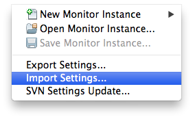
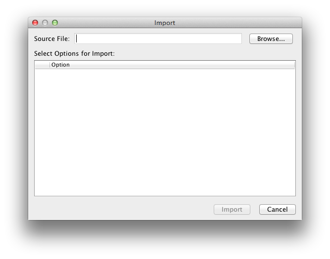

Interactive self-guided tours through the Piraso client and a great way to guage the tool's capabilities.
Before we move on with the interactive demonstration, You should first do the following requirements.
Please install Piraso client platform on your machine. Before downloading, be sure to have JDK 6 Update 13 or later.
Import the live demo Piraso client settings. You can do this by following these steps:
1 Open Piraso client and click on File > Import Settings menu.

2 Copy the import link below.
3 Provide the import url and click on Import.
